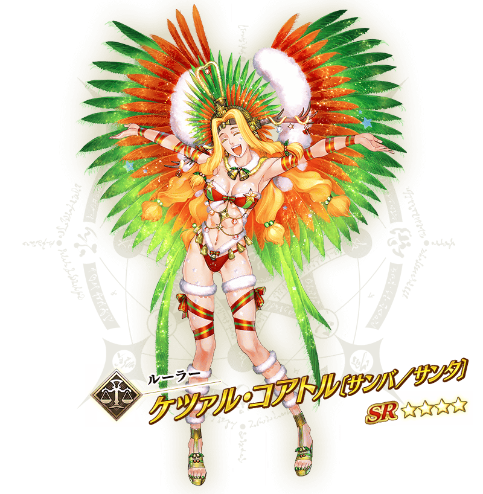

◆活動舉辦時間◆
2018年12月12日(三) 17:00～(預定)
◆活動概要◆
舉辦期間限定活動「聖誕節2018 聖森巴之夜 ～降雪遺跡與少女騎士～」！
隨著森巴的節拍，新的聖誕老人登場！
在降雪的南國小鎮舞台，環繞聖誕奇蹟的騒亂開始了。
本活動中進行主線關卡的話，活動限定Servant「★4(SR)魁札爾・科亞特爾〔森巴／聖誕〕(Ruler)」會以期間限定加入。
更加推進主線關卡，讓活動限定「★4(SR)魁札爾・科亞特爾〔森巴／聖誕〕(Ruler)」正式加入吧！
活動期間中享受故事的主線關卡將逐日開放。
除了以各關卡入手的活動收集道具交換各種報酬外，還可挑戰得到各式各樣道具的抽選！
在各關卡收集活動收集道具，得到聖誕節禮物吧！
◆活動參加條件◆
滿足以下條件的Master才能參加
・通過第2部 第1章「Lostbelt No.1 永久凍土帝國 安娜塔西亞 獸國的皇女」
※不需要通過亞種特異點(從Ⅰ到Ⅳ)。

本活動的期間中，強化「★4(SR)魁札爾・科亞特爾〔森巴／聖誕〕(Ruler)」時的獲得經驗值變成2倍。
是讓剛加入的「★4(SR)魁札爾・科亞特爾〔森巴／聖誕〕(Ruler)」等級一口氣上升的機會！
◆舉辦時間◆
2018年12月12日(三) 17:00～(預定)


本活動的期間中，活動加成篩選器的對象Servant會提升在活動關卡的自身絆點數獲得量！
別錯過絆等級上升的機會！
◆舉辦時間◆
2018年12月12日(三) 17:00～(預定)
期間限定活動「聖誕節2018 聖森巴之夜 ～降雪遺跡與少女騎士～」的活動關卡中，對下表的Servant賦予「自身的攻擊威力提升」與「自身的絆點數獲得量提升」的效果。
強化對象Servant，挑戰活動吧！
※「★3(R)瑪琇・基利艾拉特」沒有「自身的絆點數獲得量提升」的效果。
※自12月8日(六) 15:00，在Servant選擇畫面和Servant強化畫面等，追加「下次活動對象」篩選器。
由於是只顯示於下個舉辦活動活躍Servant的便利功能，敬請活用。
◆對象Servant◆
| 職階 | 稀有度 | Servant名 |
|---|---|---|
| Saber | ★★★★ | 柳生但馬守宗矩 |
| Archer | ★★★★ | 阿提拉・the・San〔誕〕 |
| ★★★★ | 凱隆 | |
| ★ | 阿拉什 | |
| Lancer | ★★★★ | 貞德・Alter・聖誕・Lily |
| ★★★ | 庫・夫林 | |
| ★★★ | 豹人 | |
| ★★★ | 赫克特 | |
| ★★★ | 羅慕路斯 | |
| Rider | ★★★★★ | 阿基里斯 |
| ★★★★★ | 伊凡雷帝 | |
| ★★★★★ | 魁札爾・科亞特爾 | |
| ★★★★ | 阿斯托爾福 | |
| ★★★★ | 阿爾托莉亞・潘德拉剛〔聖誕Alter〕 | |
| ★★★★ | 瑪爾大 | |
| ★★★ | 赤兔馬 | |
| ★★★ | 反抗軍的Rider | |
| ★★ | 愛德華・蒂奇 | |
| Caster | ★★★★★ | 安娜塔西亞 |
| ★★★★ | 湯瑪斯・愛迪生 | |
| ★★★ | 查爾斯・巴貝奇 | |
| ★★ | 漢斯・克里斯蒂安・安徒生 | |
| Assassin | ★★★★ | 卡米拉 |
| ★★★★ | 斯卡哈 | |
| ★★★★ | 不夜城的Assassin | |
| ★★ | 夏爾＝亨利・桑松 | |
| Berserker | ★★★★ | 阿塔蘭塔〔Alter〕 |
| ★★★★ | 黃金國的Berserker | |
| ★★★ | 大流士三世 | |
| ★★ | 血斧・埃里克 | |
| ★★ | 卡利古拉 | |
| ★ | 靠漫畫了解Berserker | |
| Ruler | ★★★★ | 魁札爾・科亞特爾〔森巴／聖誕〕 |
| ★★★★ | 瑪爾大 | |
| Foreigner | ★★★★★ | 葛飾北齋 |
| ★★★★ | 謎之女主角XX | |
| Shielder | ★★★ | 瑪琇・基利艾拉特 |
※關於真名尚未判明的Servant，透過主線記錄的進行會讓Servant的名稱變化。